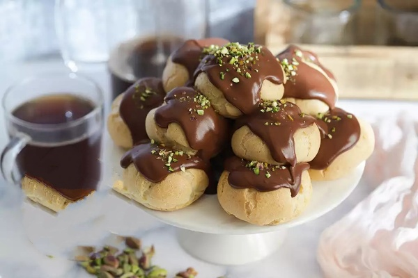
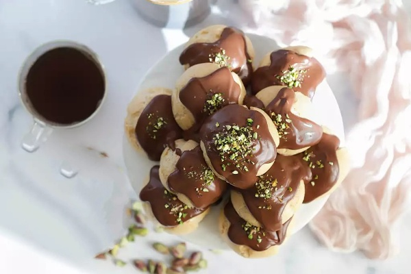

Profiterol Tarifi
Profiterol birçok kişi tarafından yapımı çok zor bulunur. Hamurun tutmadığından şikayet edilir sürekli olarak. Aslında birkaç püf noktasına dikkat edildiğinde tutmaması mümkün olmayan bir tariftir. Bu püf noktaları neymiş isterseniz bir bakalım;

- Öncelikle su, tuz ve tereyağ karışımına unu ekledikten sonra sürekli karıştırarak pişirmelisiniz. Unun tencereye yapışmasına müsaade etmemelisiniz hiçbir şekilde.
- İkinci ve en önemli noktalardan biri bu hamurun "tamamen" soğumasını beklemelisiniz. Oda sıcaklığına gelmesi yeterli değildir.

- Bir başka çok önemli nokta yumurtaların eklenme aşaması. Bu aşamada yumurtalar teker teker eklenmeli mutlaka. Bir yumurtayı ekledikten sonra hamur tekrar katılaşana kadar çırpılmalı. İkinci yumurta bundan sonra eklenmeli.
- Çırpma işlemi mümkünse mikserle yapılmalı. Elle ne kadar hızlı çırpılsa da mikser kadar iyi karıştırmak mümkün olmuyor ne yazık ki.
- Hamur tepsiye dizildikten sonra yamuk görünüyor, bu normal, endişelenmeyin,
- Pişirirken fırınınızın kapağını hiçbir koşulda açmayın yoksa sönerler. Hatta piştikten sonra da fırın soğuyana kadar açmayın. Profiterol toplarını ayakta tutan şey içlerindeki havadır. Sıcak ve yumuşakken fırından çıkardığınız takdirde hava hızlı soğumanın etkisiyle suya dönüşür. Toplar içlerindeki desteği kaybederek çökerler. Fırında tuttuğunuzda topların içindeki hava yavaş yavaş dışarı çıkana kadar toplar kendi başlarına ayakta durabilecek kadar sertleşecekleri için sönmezler.
Afiyetle kalın...
Videolu Profiterol Tarifi
Malzemeler
Hamuru için;
- 1 su bardağı un,
- 1 su bardağı su,
- 100 g tereyağı,
- 1/2 çay kaşığı tuz,
- 4 yumurta.
Kreması için;
- 2,5 su bardağı süt,
- 2 yemek kaşığı un,
- 1 yemek kaşığı nişasta,
- 1 yumurta sarısı,
- 1/2 su bardağı şeker,
- 1 yemek kaşığı tereyağı,
- Bıçağın ucuyla vanilya.
Sosu için;
- 2 su bardağı süt,
- 1 yemek kaşığı nişasta,
- 200 g bitter çikolata,
Hazırlanışı
- Toplar için tencereye su, tuz ve tereyağını koyup kaynatın,
- Kaynadıktan sonra ocaktan alıp unu ekleyin ve hızlı hızlı karıştırın,
- Un ve su tamamen karışınca ocağa tekrar alıp kısık ateşte sürekli karıştırarak 5 dakika kadar pişirin,
- Ocaktan alıp soğumasını bekleyin,
- Yumurtalardan birini ekleyip pürüzsüz bir hamur elde edene kadar çırpın,
- Aynı işlemi diğer yumurtalarla da teker teker yapın,
- Akışkan ama tepsiye sıktığınızda yayılmayacak bir hamur elde edeceksiniz,
- Hamuru sıkma torbasına koyup pişirme kağıdı serdiğiniz tepsiye aralıklı olarak 3'er cm'lik toplar sıkın,
- 190 derecede ısıttığınız fırında toplar kabarıp üzerleri kızarana kadar pişirin,
- Piştikten sonra ısıyı sıfırlayıp soğuyana kadar fırından çıkarmayın,
- Kreması için tereyağı ve vanilya hariç tüm malzemeleri tencereye alıp karıştırın ve kıvamını alana kadar pişirin,
- Tereyağı ve vanilyayı ekleyip tereyağı eriyene kadar karıştırarak pişirin ve ateşten alın,
- Soğuyana kadar üzerinin kabuk bağlamaması için düzenli aralıklarla karıştırın,
- Sosu için sütü bir sos tenceresine alıp nişastayı ekleyin ve çırpın,
- Küçük parçalara böldüğünüz çikolatayı ekleyip ocağa alın,
- Kısık ateşte sürekli karıştırarak çikolata eriyip sos kıvamını bulana kadar pişirin,
- Ateşten alıp soğuyana kadar düzenli aralıklarla karıştırın,
- Kremayı sıkma torbasına veya gıda enjektörüne koyup topların içine sıkın ve servis tabaklarına alın,
- Çikolata sosunu üzerine gezdirin.
Afiyet Olsun...
Profiterol Tarifi ilk olarak 07/07/2024 tarihinde yayınlandı.